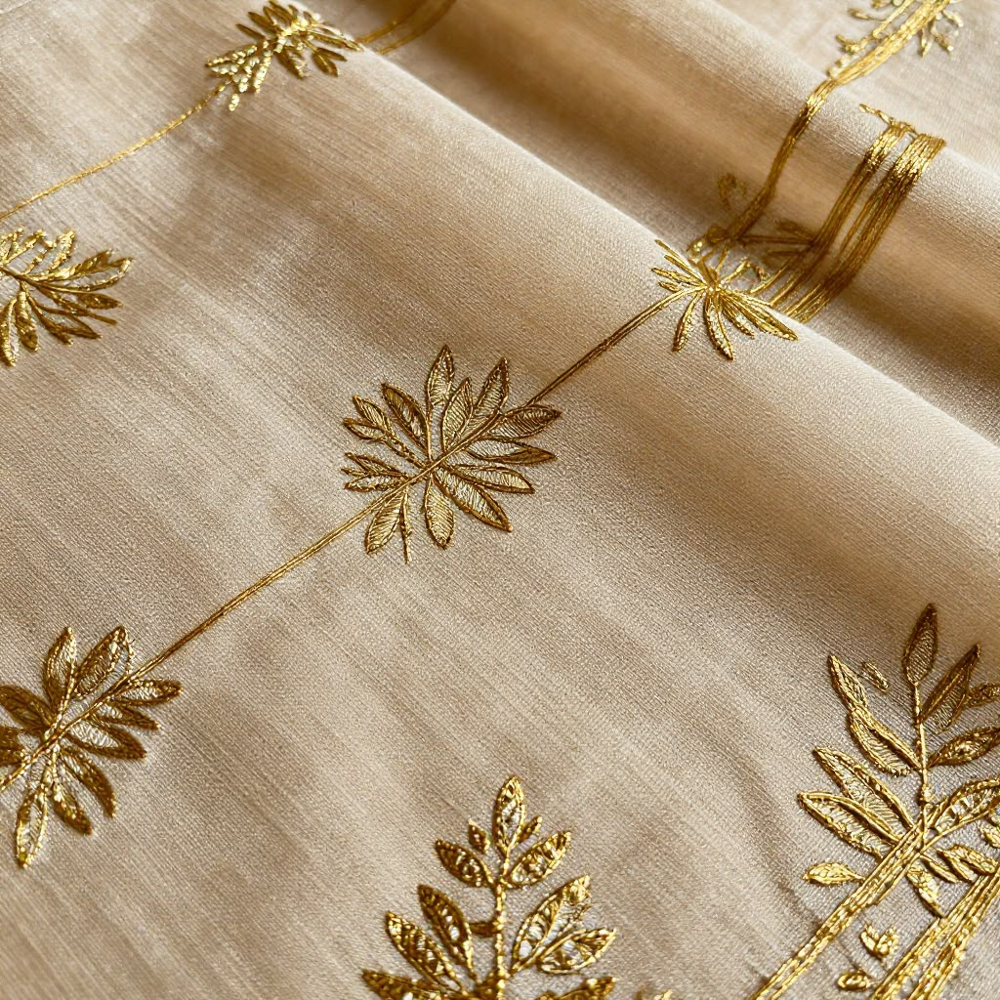
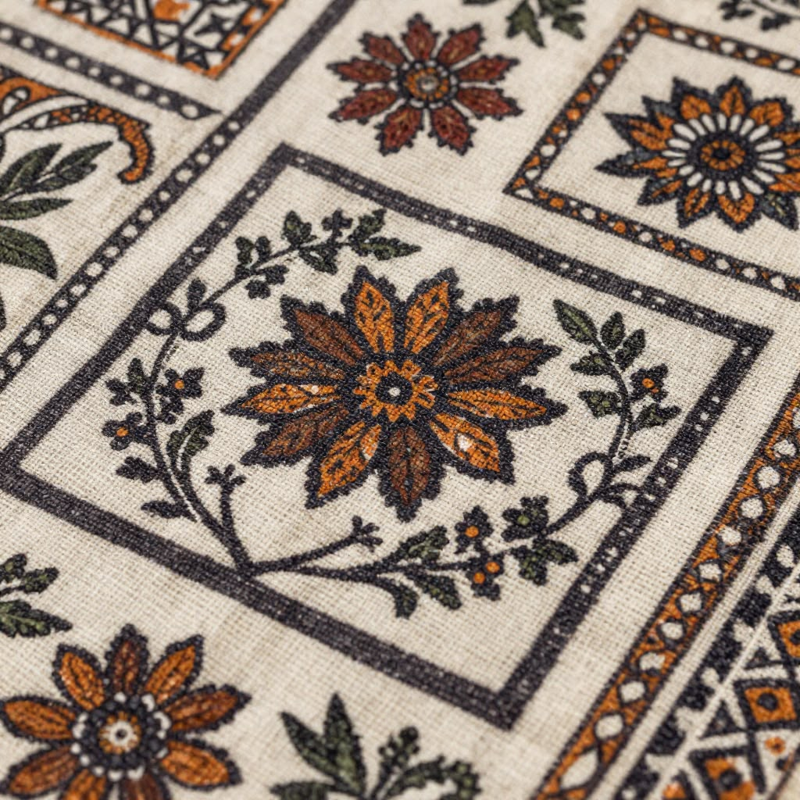
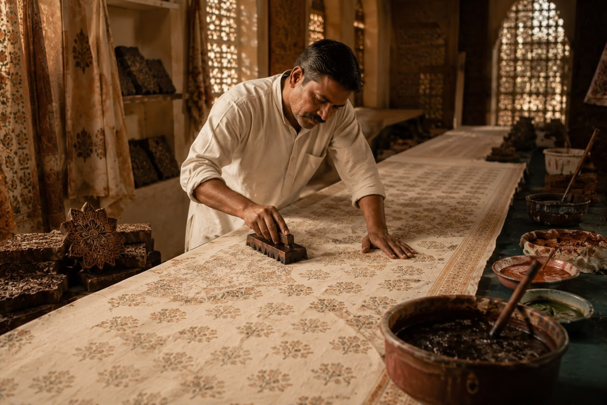

Every thread carries a story. Every block carries history. Every garment carries generations of Indian craftsmanship.
AAMKARI begins long before a garment reaches a wardrobe. It begins in workshops where knowledge has travelled through generations.
From the transparent elegance of Chanderi silk to the remarkable precision of Bagh hand-block printing, every creation celebrates India's living textile heritage.
We believe true luxury is not defined by labels. It is defined by the hands that create.

For centuries, Chanderi has been celebrated as one of India's most treasured textiles. Its delicate transparency, graceful drape and luminous texture make every garment feel effortless while carrying generations of weaving tradition.

Hand-carved wooden blocks, natural dyes and remarkable patience transform every metre of fabric into wearable art. No two impressions are ever completely identical, making every creation uniquely beautiful.

Behind every AAMKARI garment are artisans whose skills have travelled through generations. Their knowledge cannot be mass-produced—it is preserved through dedication, patience and an unwavering commitment to excellence.